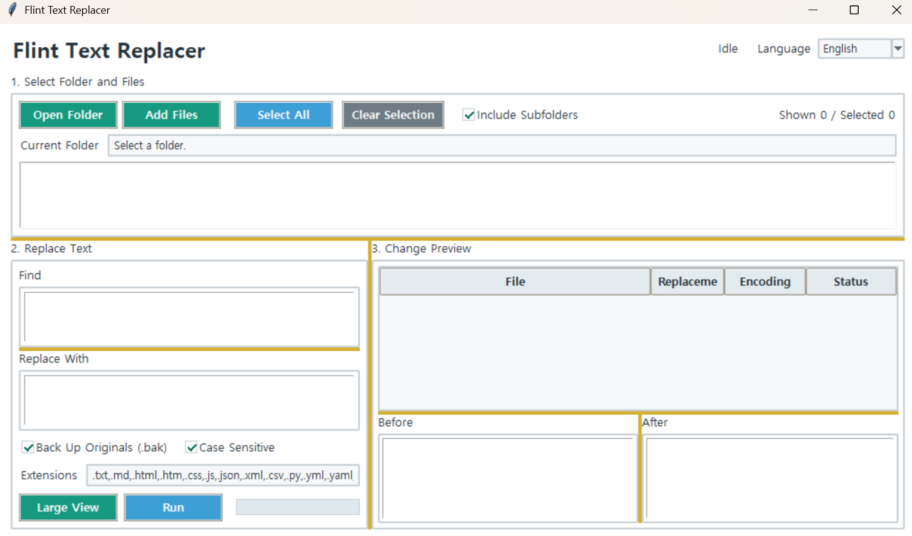

Flint Text Replacer
Version: 1.0.0
How to Use
- Click
Open Folderand select the folder you want to work with. - Select the files you want to modify from the list.
- Enter the
Find StringandReplace String. - Check the files that will actually be changed and review the before-and-after content in the preview on the right.
- If necessary, click
Enlarge Viewto inspect the before-and-after content of the selected file in a separate window. - Click
Runto apply the replacements.
The preview updates automatically when you enter a find or replacement string.
Files with no changes are not displayed in the results list.
IfBackup Original (.bak)is enabled, a.bakbackup file is created next to each file before it is modified.
Main Features
- Batch string replacement across multiple files
- Automatic before-and-after preview
- Display only files that will actually be changed
- Highlight changed locations
- Enlarged before-and-after view for selected files
- Search including subfolders
- File extension filtering
- Optional case-sensitive matching
- Support for UTF-8, UTF-16, CP949, and EUC-KR encodings
- Automatic backup of original files
Run:
python replacer.py
Note:If you are using the executable (EXE) version, you do not need to run the Python command.